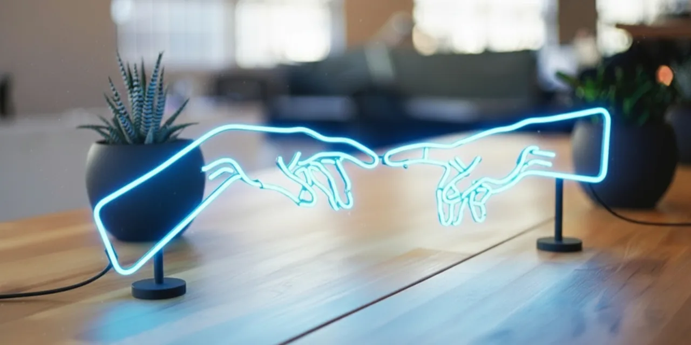
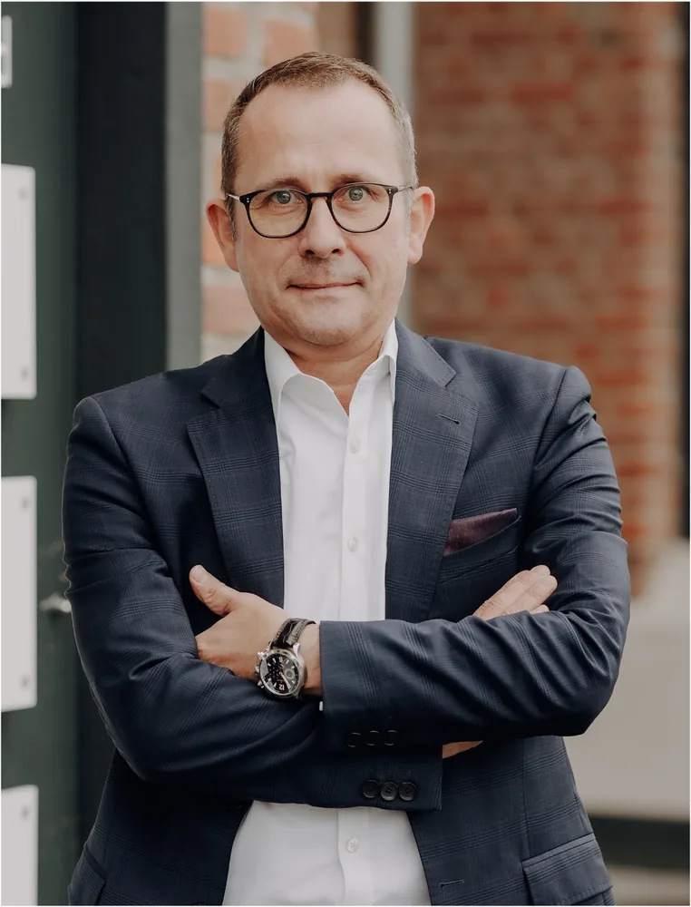
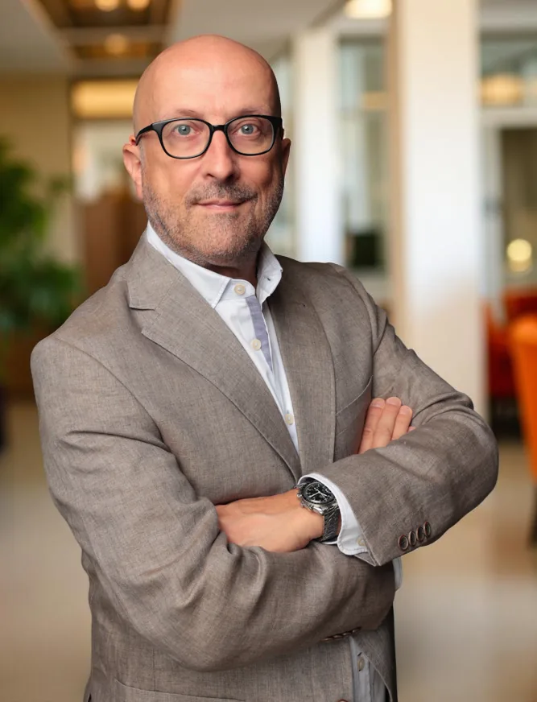

Two experienced consultants with complementary expertise – and a network of specialists that covers every project profile.
We are a team of independent consultants and source according to project requirements. We have a large network of highly experienced specialists.

Alexander Daniel Euler brings more than 25 years of leadership experience in digital transformation, multichannel marketing and sales. As Managing Director and division head, he has successfully guided companies with billion-euro turnovers through transformation processes and led teams of over 100 employees.
Focus areas:
Clients benefit from his experience in implementing complex transformation projects – from developing a clear multichannel strategy to operational execution. With his hands-on, solution-oriented approach, he helps companies turn challenges into opportunities and consistently exploit growth potential.

Frank Rüdiger Euler is an experienced leader with proven expertise in implementing digital transformations, scaling digital business models and increasing operational efficiency. He brings extensive experience in international technology, finance and consumer goods companies and has successfully led numerous projects to increase revenue in digital environments. His focus areas include:
Special topics: Book consulting (Self-Publishing) and book marketing
MultiChannelConsult works with a proven network of independent consultants and subject matter specialists. Depending on project requirements, we assemble the right team from experienced freelancers – for exactly the right expertise at exactly the right time.